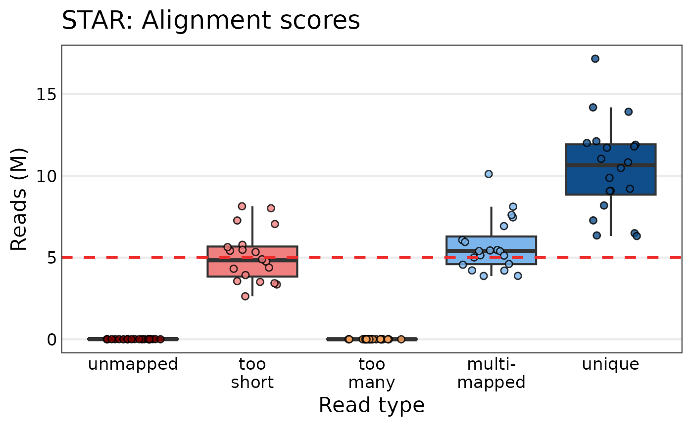
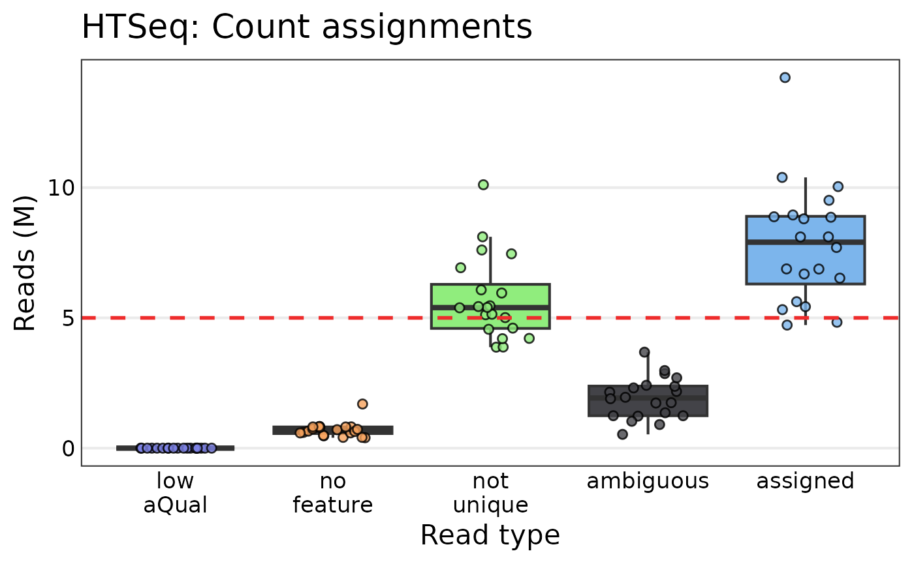
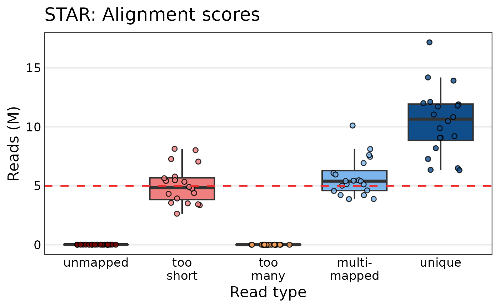
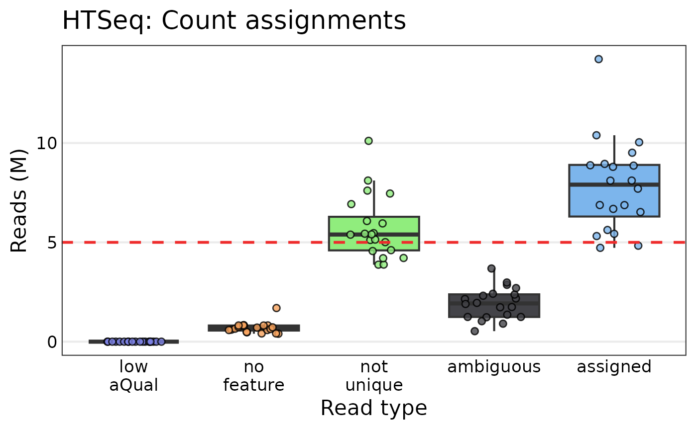
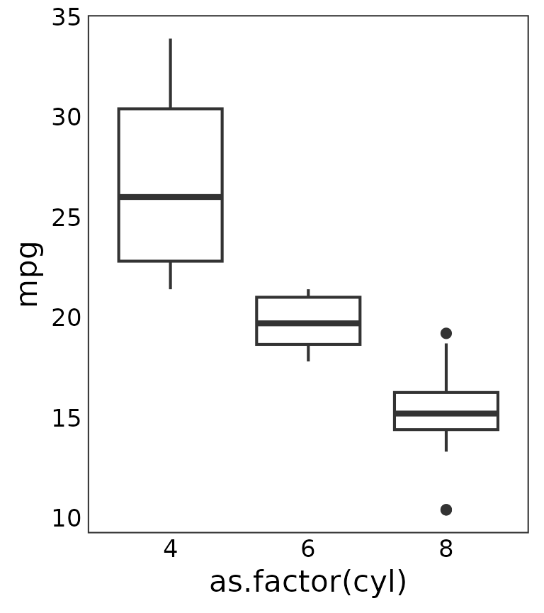
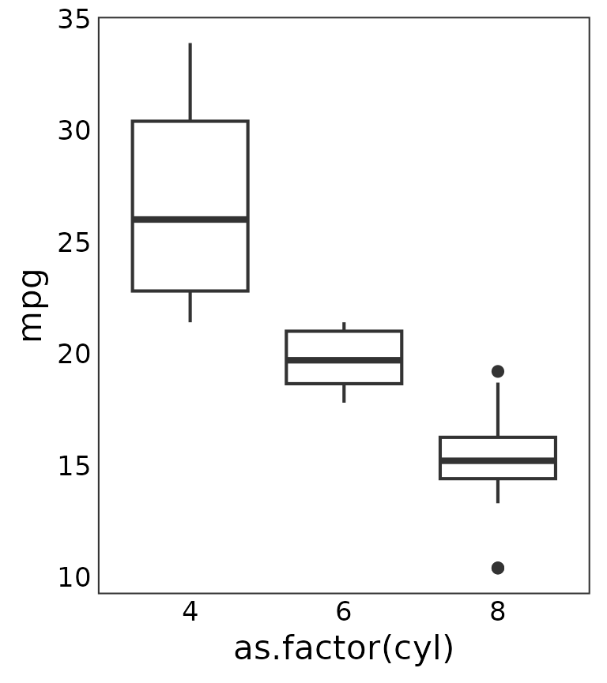

library(tRavis)
#> Thanks for using tRavis v1.6.0! If you encounter any bugs
#> or problems, please submit an issue at the Github page:
#> https://github.com/travis-m-blimkie/tRavis/issuestr_anno_cleaner
Clean annotation files (CSV or TSV) for Pseudomonas aeruginosa from https://pseudomonas.com.
# A URL can also be supplied, instead of a local file path
link <- paste0(
"https://pseudomonas.com/downloads/pseudomonas/pgd_r_22_1/",
"Pseudomonas_aeruginosa_PAO1_107/Pseudomonas_aeruginosa_PAO1_107.csv.gz"
)
tr_anno_cleaner(input_file = link)
#> # A tibble: 5,713 × 3
#> locus_tag gene_name product_name
#> <chr> <chr> <chr>
#> 1 PA0001 dnaA chromosomal replication initiator protein DnaA
#> 2 PA0002 dnaN DNA polymerase III, beta chain
#> 3 PA0003 recF RecF protein
#> 4 PA0004 gyrB DNA gyrase subunit B
#> 5 PA0005 lptA lysophosphatidic acid acyltransferase, LptA
#> 6 PA0006 NA conserved hypothetical protein
#> 7 PA0007 NA hypothetical protein
#> 8 PA0008 glyS glycyl-tRNA synthetase beta chain
#> 9 PA0009 glyQ glycyl-tRNA synthetase alpha chain
#> 10 PA0010 tag DNA-3-methyladenine glycosidase I
#> # ℹ 5,703 more rowsOr add some extra columns and fill empty names with the corresponding locus tag.
tr_anno_cleaner(link, extra_cols = TRUE, fill_names = TRUE)
#> # A tibble: 5,713 × 6
#> locus_tag gene_name product_name start end strand
#> <chr> <chr> <chr> <dbl> <dbl> <chr>
#> 1 PA0001 dnaA chromosomal replication initiator pro… 483 2027 +
#> 2 PA0002 dnaN DNA polymerase III, beta chain 2056 3159 +
#> 3 PA0003 recF RecF protein 3169 4278 +
#> 4 PA0004 gyrB DNA gyrase subunit B 4275 6695 +
#> 5 PA0005 lptA lysophosphatidic acid acyltransferase… 7018 7791 -
#> 6 PA0006 PA0006 conserved hypothetical protein 7803 8339 -
#> 7 PA0007 PA0007 hypothetical protein 8671 10377 +
#> 8 PA0008 glyS glycyl-tRNA synthetase beta chain 10434 12488 -
#> 9 PA0009 glyQ glycyl-tRNA synthetase alpha chain 12488 13435 -
#> 10 PA0010 tag DNA-3-methyladenine glycosidase I 13540 14091 +
#> # ℹ 5,703 more rowstr_clean_deseq2_result
Takes a DESeq2 results
object, and returns the significant DE genes, printing a message
summarizing the comparison and number of significant genes when
inform = TRUE (default).
ex_deseq_results <-
readRDS(system.file("extdata", "ex_deseq_results.rds", package = "tRavis"))
ex_deseq_results
#> log2 fold change (MLE): condition B vs A
#> Wald test p-value: condition B vs A
#> DataFrame with 200 rows and 6 columns
#> baseMean log2FoldChange lfcSE stat pvalue padj
#> <numeric> <numeric> <numeric> <numeric> <numeric> <numeric>
#> gene1 7.1530 -0.636105 0.750697 -0.847352 3.96799e-01 4.95998e-01
#> gene2 108.3659 2.872486 0.357737 8.029601 9.77899e-16 1.62983e-14
#> gene3 25.1923 1.724502 0.643106 2.681522 7.32882e-03 1.62863e-02
#> gene4 110.2302 -1.375727 0.321775 -4.275440 1.90761e-05 7.06521e-05
#> gene5 15.1829 -5.412610 0.819823 -6.602166 4.05195e-11 3.68359e-10
#> ... ... ... ... ... ... ...
#> gene196 1.28627 -0.654713 1.676396 -0.390548 6.96131e-01 7.86589e-01
#> gene197 591.21368 3.285941 0.278768 11.787369 4.53489e-32 4.53489e-30
#> gene198 4.67660 2.434828 0.961683 2.531839 1.13466e-02 2.33951e-02
#> gene199 14.96302 -2.313151 0.491582 -4.705521 2.53218e-06 1.17776e-05
#> gene200 17.69265 1.970386 0.602859 3.268401 1.08157e-03 3.00436e-03
tr_clean_deseq2_result(ex_deseq_results)
#> Found 100 DE genes for condition B vs A.
#> # A tibble: 100 × 7
#> gene baseMean log2FoldChange lfcSE stat pvalue padj
#> <chr> <dbl> <dbl> <dbl> <dbl> <dbl> <dbl>
#> 1 gene95 853. 3.35 0.279 12.0 3.26e-33 6.53e-31
#> 2 gene197 591. 3.29 0.279 11.8 4.53e-32 4.53e-30
#> 3 gene180 420. 3.30 0.298 11.1 1.57e-28 1.05e-26
#> 4 gene70 235. -2.91 0.276 -10.5 5.23e-26 2.62e-24
#> 5 gene106 886. 3.08 0.303 10.1 3.80e-24 1.52e-22
#> 6 gene187 57.3 -4.28 0.428 -10.0 1.42e-23 4.74e-22
#> 7 gene26 93.9 4.62 0.473 9.77 1.47e-22 4.20e-21
#> 8 gene68 72.7 -3.23 0.345 -9.37 7.58e-21 1.90e-19
#> 9 gene122 462. 2.63 0.307 8.58 9.79e-18 2.18e-16
#> 10 gene39 191. 2.67 0.325 8.20 2.33e-16 4.66e-15
#> # ℹ 90 more rowsThe default filters applied to the data are:
padj < 0.05 and
abs(log2FoldChange) > log2(1.5).
tr_compare_lists
Compare two lists to find the common/unique elements, with an
optional names argument to apply to the results.
tr_compare_lists(c(1, 2, 3, 4), c(3, 4, 5, 6), names = c("A", "B"))
#> $unique_A
#> [1] 1 2
#>
#> $common
#> [1] 3 4
#>
#> $unique_B
#> [1] 5 6tr_get_files
Create a named list of files, easily piped into
purrr::map(~read.csv(.x)) to generate a named list of data
frames. Supports recursive searching, custom string/pattern removal, and
date removal assuming a format like YYYYMMDD (can’t contain
punctuation/symbols).
tr_get_files(
directory = system.file("extdata", package = "tRavis"),
pattern = "test",
date = TRUE,
remove_string = "test_"
)
#> $file1
#> [1] "/home/runner/work/_temp/Library/tRavis/extdata/test_file1_20191231.csv"
#>
#> $file2
#> [1] "/home/runner/work/_temp/Library/tRavis/extdata/test_file2_20200101.csv"tr_qc_plots
Generate RNA-Seq QC plots from MultiQC outputs. Currently only supports summary plots for FastQC (Phred scores and read counts), STAR, and HTSeq. Plots are created with ggplot2 for simplicity. A few arguments are provided to modify the overall font size, set the limits, and toggle a threshold line at a given number of reads/counts:
multiqc_data <- system.file("extdata/tr_qc_plots_data", package = "tRavis")
list.files(multiqc_data)
#> [1] "fastqc_per_base_sequence_quality_plot.tsv"
#> [2] "multiqc_fastqc.txt"
#> [3] "multiqc_htseq.txt"
#> [4] "multiqc_star.txt"
qc_plot_output <- tr_qc_plots(
directory = multiqc_data,
threshold_line = 5e6,
font_size = 14
)
qc_plot_output[["plots"]]
#> $phred_scores
#>
#> $fastqc_reads
#>
#> $star
#>
#> $htseq


Alternate boxplots
The bar plots work well enough for relatively few samples, but quickly become unwieldy with lots of samples. Box plots can also be generated using the same function as follows:
qc_plot_output_box <- tr_qc_plots(
directory = multiqc_data,
type = "box",
threshold_line = 5e6,
font_size = 16
)
qc_plot_output_box[["plots"]][c("fastqc_reads", "star", "htseq")]
#> $fastqc_reads
#>
#> $star
#>
#> $htseq 

The points can be toggled on or off using the add_points
argument.
Data
All the underlying tidy data is also returned, so one can easily generate their own plots or further examine the data as desired:
qc_plot_output[["data"]][["phred_scores"]]
#> # A tibble: 760 × 3
#> sample position phred_score
#> <chr> <int> <dbl>
#> 1 sample_01 1 35.5
#> 2 sample_02 1 35.5
#> 3 sample_03 1 35.5
#> 4 sample_04 1 35.5
#> 5 sample_05 1 35.5
#> 6 sample_06 1 35.5
#> 7 sample_07 1 35.5
#> 8 sample_08 1 35.5
#> 9 sample_09 1 35.5
#> 10 sample_10 1 35.6
#> # ℹ 750 more rows
qc_plot_output[["data"]][["fastqc_reads"]]
#> # A tibble: 40 × 3
#> Samples read_type n_reads
#> <fct> <chr> <dbl>
#> 1 sample_03 unique 2685620.
#> 2 sample_03 duplicate 10908567.
#> 3 sample_02 unique 2803309.
#> 4 sample_02 duplicate 11083659.
#> 5 sample_05 unique 3006011.
#> 6 sample_05 duplicate 12419121.
#> 7 sample_12 unique 3186383.
#> 8 sample_12 duplicate 12738310.
#> 9 sample_19 unique 2725919.
#> 10 sample_19 duplicate 14029645.
#> # ℹ 30 more rows
qc_plot_output[["data"]][["star"]]
#> # A tibble: 100 × 3
#> Samples read_type n_reads
#> <fct> <fct> <int>
#> 1 sample_03 unique 6352702
#> 2 sample_03 multimapped 3876206
#> 3 sample_03 too many 2908
#> 4 sample_03 too short 3354213
#> 5 sample_03 unmapped 8158
#> 6 sample_02 unique 6489051
#> 7 sample_02 multimapped 3880477
#> 8 sample_02 too many 2416
#> 9 sample_02 too short 3509469
#> 10 sample_02 unmapped 5555
#> # ℹ 90 more rows
qc_plot_output[["data"]][["htseq"]]
#> # A tibble: 100 × 3
#> Samples read_type n_reads
#> <fct> <fct> <int>
#> 1 sample_03 assigned 4724190
#> 2 sample_03 ambiguous 1228684
#> 3 sample_03 not unique 3876206
#> 4 sample_03 no feature 399828
#> 5 sample_03 low aQual 0
#> 6 sample_02 assigned 4831854
#> 7 sample_02 ambiguous 1243270
#> 8 sample_02 not unique 3880477
#> 9 sample_02 no feature 413927
#> 10 sample_02 low aQual 0
#> # ℹ 90 more rowstr_sort_alphanum
Sort a column of alphanumeric strings in (non-binary) numerical order given an input data frame and desired column. You can use the column name or index, and its compatible with pipes.
df_unsorted <- data.frame(
colA = c("a11", "a1", "b1", "a2"),
colB = c(3, 1, 4, 2)
)
tr_sort_alphanum(input_df = df_unsorted, sort_col = "colA")
#> colA colB
#> 2 a1 1
#> 4 a2 2
#> 1 a11 3
#> 3 b1 4tr_test_enrichment
Simple wrapper around Fisher’s test for gene enrichment, which constructs the matrix for you and returns the p value.
all_genes <- paste0("gene", sample(1:10000, 5000))
de_genes <- sample(all_genes, 1500)
gene_set <- sample(all_genes, 100)
tr_test_enrichment(
query_set = de_genes,
enrichment_set = gene_set,
total_genes = 5000
)
#> [1] 0.05127792tr_theme
Clean themes for ggplot2 that improve on the default by increasing font size, changing the background to white, and adding a border. By default it uses a minimal grid, but you can easily remove the grid entirely.
library(ggplot2)
basic_box_plot <- ggplot(mtcars, aes(as.factor(cyl), mpg)) + geom_boxplot()
basic_box_plot + tr_theme()
basic_box_plot + tr_theme(grid = FALSE) 

tr_tidy_gage
Combines the items “greater” and “less” from the list output by gage into a single tidy data frame (tibble), and provides an option to filter the results based on q value.
tibble_head <- function(x) {
head(dplyr::as_tibble(x, rownames = "rownames"))
}
gage_untidy <-
readRDS(system.file("extdata", "ex_gage_results.rds", package = "tRavis"))
# Have a look at the original results
lapply(gage_untidy, tibble_head)
#> $greater
#> # A tibble: 6 × 7
#> rownames p.geomean stat.mean p.val q.val set.size exp1
#> <chr> <dbl> <dbl> <dbl> <dbl> <dbl> <dbl>
#> 1 pae00470 D-Amino acid metabo… 0.0630 1.61 0.0630 0.924 10 0.0630
#> 2 pae01232 Nucleotide metaboli… 0.111 1.24 0.111 0.924 16 0.111
#> 3 pae00640 Propanoate metaboli… 0.167 0.994 0.167 0.924 11 0.167
#> 4 pae00330 Arginine and prolin… 0.179 0.937 0.179 0.924 14 0.179
#> 5 pae03010 Ribosome 0.197 0.862 0.197 0.924 19 0.197
#> 6 pae01210 2-Oxocarboxylic aci… 0.250 0.684 0.250 0.924 12 0.250
#>
#> $less
#> # A tibble: 6 × 7
#> rownames p.geomean stat.mean p.val q.val set.size exp1
#> <chr> <dbl> <dbl> <dbl> <dbl> <dbl> <dbl>
#> 1 pae00650 Butanoate metabolism 0.0764 -1.48 0.0764 0.680 13 0.0764
#> 2 pae01230 Biosynthesis of ami… 0.0773 -1.44 0.0773 0.680 45 0.0773
#> 3 pae00260 Glycine, serine and… 0.0877 -1.39 0.0877 0.680 16 0.0877
#> 4 pae01100 Metabolic pathways 0.0973 -1.30 0.0973 0.680 269 0.0973
#> 5 pae00630 Glyoxylate and dica… 0.118 -1.23 0.118 0.680 11 0.118
#> 6 pae01120 Microbial metabolis… 0.160 -0.999 0.160 0.680 77 0.160
#>
#> $stats
#> # A tibble: 6 × 3
#> rownames stat.mean exp1
#> <chr> <dbl> <dbl>
#> 1 pae00470 D-Amino acid metabolism 1.61 1.61
#> 2 pae01232 Nucleotide metabolism 1.24 1.24
#> 3 pae00640 Propanoate metabolism 0.994 0.994
#> 4 pae00330 Arginine and proline metabolism 0.937 0.937
#> 5 pae03010 Ribosome 0.862 0.862
#> 6 pae01210 2-Oxocarboxylic acid metabolism 0.684 0.684
tr_tidy_gage(gage_untidy, qval = 1)
#> # A tibble: 70 × 7
#> pathway p_geomean stat_mean p_val q_val set_size exp1
#> <chr> <dbl> <dbl> <dbl> <dbl> <dbl> <dbl>
#> 1 pae00470 D-Amino acid metab… 0.0630 1.61 0.0630 0.924 10 0.0630
#> 2 pae01232 Nucleotide metabol… 0.111 1.24 0.111 0.924 16 0.111
#> 3 pae00640 Propanoate metabol… 0.167 0.994 0.167 0.924 11 0.167
#> 4 pae00330 Arginine and proli… 0.179 0.937 0.179 0.924 14 0.179
#> 5 pae03010 Ribosome 0.197 0.862 0.197 0.924 19 0.197
#> 6 pae01210 2-Oxocarboxylic ac… 0.250 0.684 0.250 0.924 12 0.250
#> 7 pae02040 Flagellar assembly 0.267 0.635 0.267 0.924 11 0.267
#> 8 pae00620 Pyruvate metabolism 0.302 0.526 0.302 0.924 13 0.302
#> 9 pae02024 Quorum sensing 0.327 0.452 0.327 0.924 29 0.327
#> 10 pae00405 Phenazine biosynth… 0.367 0.345 0.367 0.924 10 0.367
#> # ℹ 60 more rowstr_trunc_neatly
Simple function to truncate long strings without breaking them in the middle of a word. Useful for trimming long axis labels in a plot.
tr_trunc_neatly(
x = "This is a long string that we want to break neatly",
l = 40
)
#> [1] "This is a long string that we want to..."It’s can also be used inside of a mutate call:
ex_df <- data.frame(
col1 = c(1, 2, 3),
col2 = c(
"This is a pretty long string",
"This string is actually a bit longer",
"Here is the longest string of them all, just!"
)
)
dplyr::mutate(
ex_df,
col3 = purrr::map_chr(col2, ~tr_trunc_neatly(.x, l = 20))
)
#> col1 col2 col3
#> 1 1 This is a pretty long string This is a pretty...
#> 2 2 This string is actually a bit longer This string is...
#> 3 3 Here is the longest string of them all, just! Here is the longest...Session information
#> R version 4.4.1 (2024-06-14)
#> Platform: x86_64-pc-linux-gnu
#> Running under: Ubuntu 22.04.4 LTS
#>
#> Matrix products: default
#> BLAS: /usr/lib/x86_64-linux-gnu/openblas-pthread/libblas.so.3
#> LAPACK: /usr/lib/x86_64-linux-gnu/openblas-pthread/libopenblasp-r0.3.20.so; LAPACK version 3.10.0
#>
#> locale:
#> [1] LC_CTYPE=C.UTF-8 LC_NUMERIC=C LC_TIME=C.UTF-8
#> [4] LC_COLLATE=C.UTF-8 LC_MONETARY=C.UTF-8 LC_MESSAGES=C.UTF-8
#> [7] LC_PAPER=C.UTF-8 LC_NAME=C LC_ADDRESS=C
#> [10] LC_TELEPHONE=C LC_MEASUREMENT=C.UTF-8 LC_IDENTIFICATION=C
#>
#> time zone: UTC
#> tzcode source: system (glibc)
#>
#> attached base packages:
#> [1] stats4 stats graphics grDevices utils datasets methods
#> [8] base
#>
#> other attached packages:
#> [1] ggplot2_3.5.1 DESeq2_1.44.0
#> [3] SummarizedExperiment_1.34.0 Biobase_2.64.0
#> [5] MatrixGenerics_1.16.0 matrixStats_1.3.0
#> [7] GenomicRanges_1.56.1 GenomeInfoDb_1.40.1
#> [9] IRanges_2.38.1 S4Vectors_0.42.1
#> [11] BiocGenerics_0.50.0 tRavis_1.6.0
#>
#> loaded via a namespace (and not attached):
#> [1] tidyselect_1.2.1 dplyr_1.1.4 farver_2.1.2
#> [4] fastmap_1.2.0 janitor_2.2.0 digest_0.6.36
#> [7] timechange_0.3.0 lifecycle_1.0.4 magrittr_2.0.3
#> [10] compiler_4.4.1 rlang_1.1.4 sass_0.4.9
#> [13] tools_4.4.1 utf8_1.2.4 yaml_2.3.9
#> [16] knitr_1.48 S4Arrays_1.4.1 labeling_0.4.3
#> [19] bit_4.0.5 curl_5.2.1 DelayedArray_0.30.1
#> [22] plyr_1.8.9 abind_1.4-5 BiocParallel_1.38.0
#> [25] withr_3.0.0 purrr_1.0.2 desc_1.4.3
#> [28] grid_4.4.1 fansi_1.0.6 colorspace_2.1-0
#> [31] scales_1.3.0 cli_3.6.3 rmarkdown_2.27
#> [34] crayon_1.5.3 ragg_1.3.2 generics_0.1.3
#> [37] httr_1.4.7 tzdb_0.4.0 cachem_1.1.0
#> [40] stringr_1.5.1 zlibbioc_1.50.0 parallel_4.4.1
#> [43] XVector_0.44.0 vctrs_0.6.5 Matrix_1.7-0
#> [46] jsonlite_1.8.8 hms_1.1.3 bit64_4.0.5
#> [49] ggrepel_0.9.5 systemfonts_1.1.0 locfit_1.5-9.10
#> [52] tidyr_1.3.1 jquerylib_0.1.4 glue_1.7.0
#> [55] pkgdown_2.1.0 codetools_0.2-20 lubridate_1.9.3
#> [58] stringi_1.8.4 gtable_0.3.5 UCSC.utils_1.0.0
#> [61] munsell_0.5.1 tibble_3.2.1 pillar_1.9.0
#> [64] htmltools_0.5.8.1 GenomeInfoDbData_1.2.12 R6_2.5.1
#> [67] textshaping_0.4.0 vroom_1.6.5 evaluate_0.24.0
#> [70] lattice_0.22-6 highr_0.11 readr_2.1.5
#> [73] snakecase_0.11.1 bslib_0.7.0 Rcpp_1.0.13
#> [76] SparseArray_1.4.8 xfun_0.46 fs_1.6.4
#> [79] forcats_1.0.0 pkgconfig_2.0.3